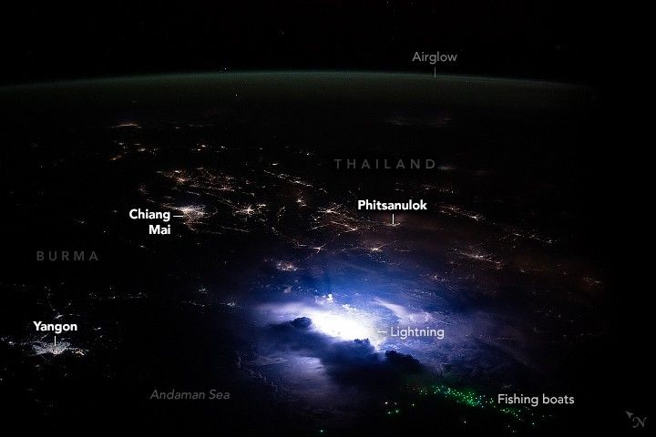

Lights of Southeast Asia
An astronaut aboard the International Space Station took this nighttime photo while orbiting near the Andaman Sea in Southeast Asia. In the foreground, bright flashes of lightning from a thunderstorm loom near fishing boats offshore of Burma’s largest city, Yangon. This view from the space station looks across a populated region where the countries of Burma (Myanmar), Thailand, and Laos share borders.
At the time of this photograph, little to no moonlight illuminated the scene. This allows astronauts to see and photograph a variety of light sources with a high degree of contrast against the dark land and water surfaces. Bright light associated with lightning is a common occurrence during the monsoon season across Southeast Asia.
City lights can be seen throughout much of the landscape. Several interconnected cities, such as Chiang Mai and Phitsanulok, are located within Thailand’s central river valley, where the Chao Phraya River runs. Beyond these city lights, the darkness leading toward the horizon indicates the vegetated landscapes of rural Thailand with few light sources.
Another frequent sighting from the space station is the green lights from fishing boats, seen here clustered offshore near the storm. The bright green lights are used to attract plankton and fish to the boats and stand out against the dark ocean water. Looking toward Earth’s horizon, a faint green layer of airglow hovers between the darkness of space and the land below.
The southernmost part of Burma, shown here in October 2024, experienced some damage from the magnitude 7.7 earthquake that struck five months later in March 2025. The earthquake epicenter was located near Mandalay, Burma, approximately 628 kilometers (390 miles) north of Yangon, just out of frame.